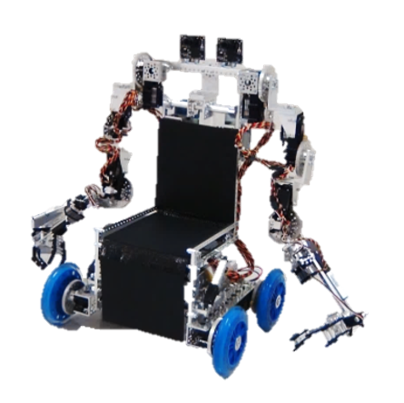
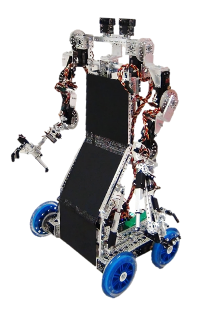
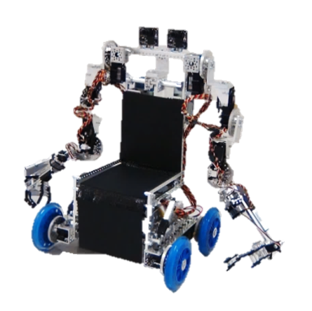
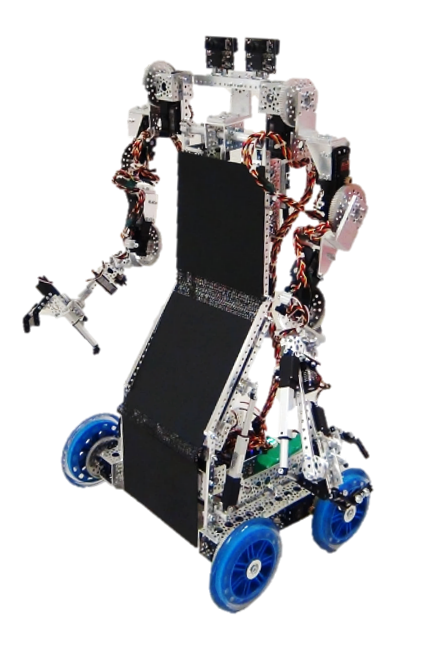

This work addresses how non-invasive technologies can be used as a practical and effective solution to convert brainwaves into movement of robotic prosthetics for manipulating objects. It explores how the brain-computer interfacing process can be tailored to the individual, providing multimodal control to reduce mental taxation and the use of natural language for an intuitive means of externalizing intent.
In this study, the user wore a Neurosky Mindwave, a commercially available electroencephalography (EEG) headset that records brain activity from the scalp. Three techniques (blinking, jaw clenching, and focused attention) were selected to induce brain signals. Data was received and processed with OpenVibe, an on off-the-shelf BCI software environment.
The user can formulate natural language sentences word-by-word via biosignals using a graphical user interface. If a signal generation event occurs when the marker points to a keyword, it is selected for processing. Modes of signal generation include focused attention, eye blinking, and jaw clenching. Further, if desired, the user can activate a voice control mode at any time.
The user can also program the system via biosignals by defining and storing up to 25 sets of sentences (“paragraphs”) as programs to be retrieved and executed at a later time.
Natural language sentences are mapped into logical predicates using set operations and template matching.
Domain knowledge is represented using logical expressions, including the behavior of and relationships among robot parts. The underlying computations for making the robot respond to user requests are modeled using theorem proving.
A life-size humanoid robot was designed and built for performing object manipulation and navigation tasks. In addition, an experimental model robotic wheelchair was designed and constructed with mountable robotic arms and a transformable seat capable of moving to an upright position.
 



Both robots have two cameras for object recognition and motion planning. An operational space is defined and tagged with keywords for natural language-based object manipulation.
Each signal generation technique reported over 90% accuracy to generate natural language sentences. The wheelchair was fully operational using the BCI system; the humanoid effectively employed object manipulation and rudimentary navigation. The video below shows the system in action.
The efficacy of this system was highly competitive for BCI research with the added safety and cost benefits of non-invasive technologies. Many software and hardware components were open-source or inexpensive, making this solution more commercially-viable.
Various design choices proved beneficial in reducing mental taxation, including multimodality which combats fatigue and the use of natural language which provides an intuitive means for externalizing intent. Further, support for machine intelligence through the logical inference engine and the programming capability eases user operation for frequent, complex processes.
These results confirm the viability of less invasive, more cost-effective solutions. Continuation of this work will help expand the development of more flexible assistive tools that can enhance mobility and further independence for those with physical disabilities.
Read More:The following report covers the methodology (including signal processing algorithms, natural language processing schema, and robot control algorithms) and performance results in more detail.*
Download Report* This report reflects a previous iteration of the mechanical system, in which the humanoid was significantly less dexterous and the hybrid wheelchair had yet to be developed.